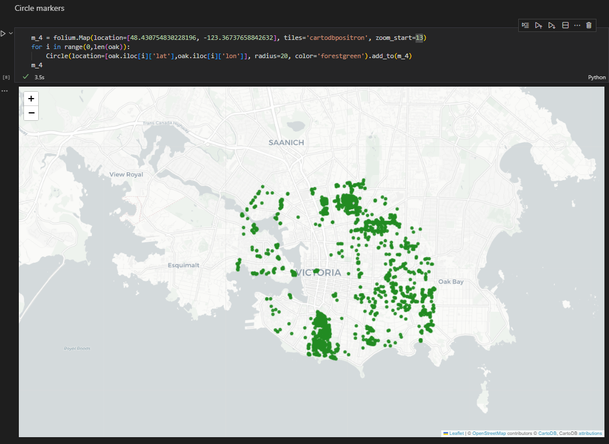

Lavanya Gopal
GIS | Data Science | Remote Sensing | Engineering
Toggle navigation
Home
Resume
Blog
Garry Oaks of Victoria using Folium

 Lavanya Gopal
GIS | Data Science | Remote Sensing | Engineering
Lavanya Gopal
GIS | Data Science | Remote Sensing | Engineering